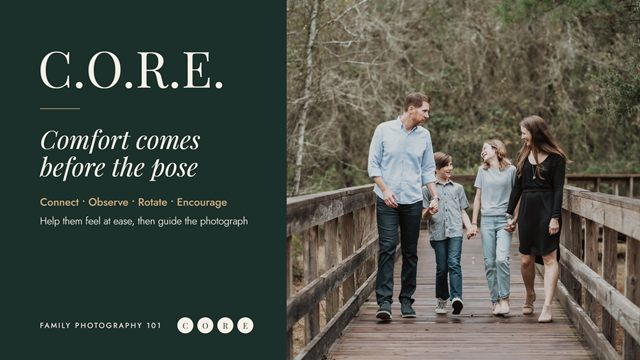
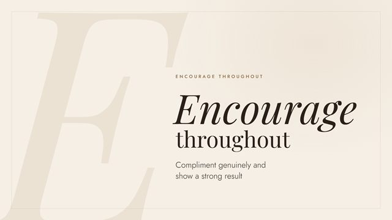

The Photo Mentorship · 2026 · Blog lesson
Family Photography 101: a lesson in six cards
“The C.O.R.E. Posing Method” is a Family Photography 101 lesson on getting relaxed, natural family photos. I prepared the blog post and designed a six-card sequence that walks through the method one step at a time.
- My part
- Card design and four rounds of revisions, blog images and thumbnails, article formatting for publishing
- With
- David Molnar and the TPM team: lesson, video, photography, approvals
- Channel
- TPM blog, social

Context
Family Photography 101 is one of The Photo Mentorship’s lesson series. This lesson pairs a video with a blog article explaining C.O.R.E.: Connect, Observe, Rotate, Encourage. The idea is that stiff family photos usually come from families who feel uncomfortable, not from bad technique.
The need
The article is long and practical. Readers needed a way to see the whole method at a glance and remember the four steps, both in the post and when it is shared on social media.
What I did
- Formatted the article for the blog, including the lesson video embed and section headings for each step.
- Designed a six-card sequence: an opening card, one card for each C.O.R.E. step, and a closing card that ties them together.
- Revised the set through four rounds, changing the order, the photographs, and the type treatment.
- Produced matching YouTube and blog thumbnails for the lesson (shown in the thumbnail system case study).
The final sequence
Scroll sideways to read the cards in order.


How it changed
The first round used a dark green and cream palette, a large acronym, and a separate card for the C.O.R.E. summary. Later rounds moved to one consistent cream layout, put a real family photograph on the action steps, and replaced the summary card with an opening “Comfort” card and a closing “Together” card, so the set reads as a story rather than a list.



Decisions
One idea per card
Each card carries a single instruction and one supporting line taken from the article, so it still makes sense when shared on its own.
Photos only where they help
Steps about doing something with the family (Connect, Observe, Rotate) show a family photo. Steps about the photographer’s attitude (Comfort, Encourage) are type-only, which also gives the sequence a rhythm.
Match the course, not the platform
The cards follow the cream and serif style of the rest of the Family Photography 101 material, so they look like part of the course wherever they appear.
Deliverables
- Six 1920 × 1080 cards, final round, plus earlier rounds for comparison
- Blog article prepared for publishing, with the lesson video embedded
- Six thumbnail options for the lesson